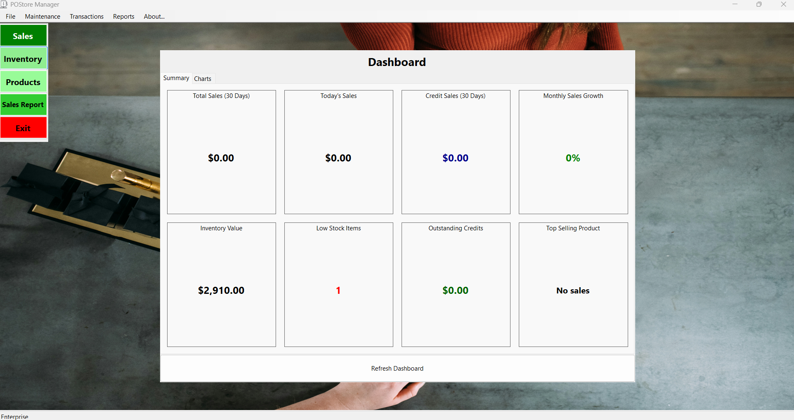

Descarga Mi Aplicación de Ventas: POStore
¡Obtén la última versión de mi aplicación de Punto de Venta gratis! Haz clic en el botón de abajo para descargar.
Descargar AhoraNota: La aplicación está disponible actualmente solo para Windows. Por favor, vuelve más tarde para otras plataformas.
Características: Esta aplicación incluye un sistema completo de gestión de ventas con funciones como gestión de productos, seguimiento de ventas, roles de usuarios y gestión de clientes.
Soporte: Si tienes alguna pregunta o necesitas ayuda con la aplicación, no dudes en contactarme a través de:
Llámame
+(506) 86906111
Correo Electrónico
pabloandreychaconluna@hotmail.com
Solo descarga el archivo Postore.zip y extrae los archivos.

Después de extraer, encontrarás el archivo setup.exe. Haz doble clic para iniciar el proceso de instalación.

Después de la instalación, puedes encontrar la aplicación en tu Menú de Inicio o en tu escritorio.
Cambiar el idioma a español: Si la aplicación no está en español, puedes cambiar el idioma desde la configuración de la aplicación. Busca la opción de "Idioma" y selecciona "Español".
Agrega tus productos.

Realiza ventas.

Nota de Seguridad: Siempre usa un programa antivirus actualizado para escanear los archivos descargados antes de ejecutarlos. Esto ayuda a garantizar la seguridad de tu sistema.
Copias de Seguridad: Se recomienda encarecidamente realizar copias de seguridad regulares de tus datos. Esta aplicación incluye una función para respaldar tus datos en un archivo. Puedes encontrar esta opción en la configuración de la aplicación. Las copias de seguridad regulares ayudan a prevenir la pérdida de datos en caso de problemas inesperados o fallos del sistema. Mantén siempre tus copias de seguridad en un lugar seguro.
Aviso Legal: Esta aplicación se proporciona tal cual, sin ninguna garantía. Úsala bajo tu propio riesgo. No soy responsable de ningún daño o problema que pueda surgir del uso de esta aplicación. Al descargar y usar esta aplicación, aceptas los términos de este aviso legal.